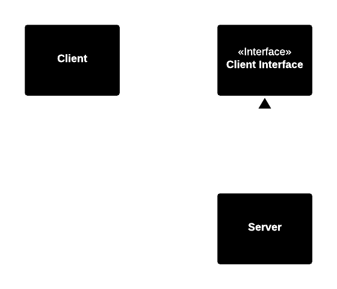
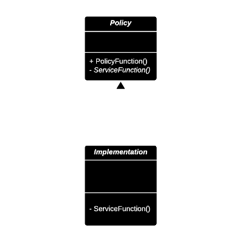
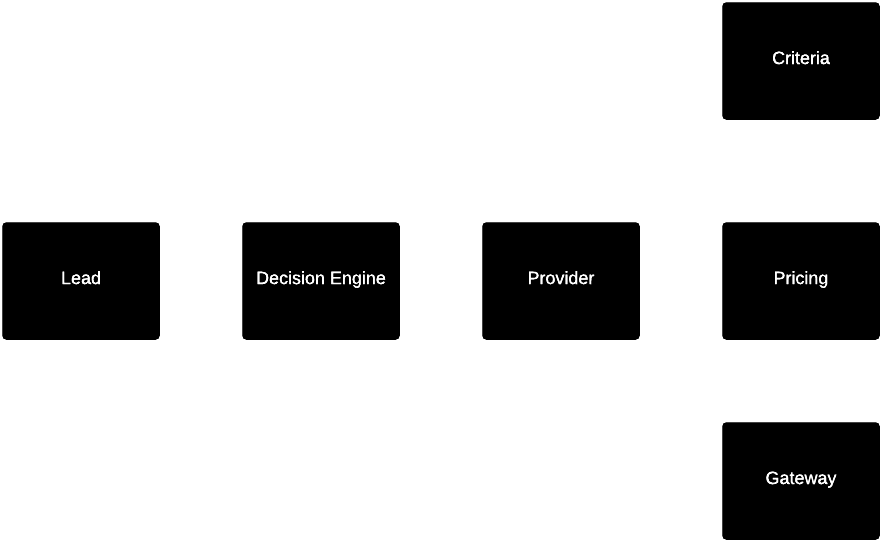

Closed
Closed for modification.
Effect
Understandability and distribution of work. Take advantage of object
oriented design and the information hiding principle.
Add new code rather than change existing code.
Example: Not Open and Closed
Client is not open and closed.
Example: Strategy Pattern

Example: Strategy Pattern
- ClientInterface is an abstract class with abstract member functions. It represents the work that Client must do.
- Why not AbstractServer? Abstract classes are more closely associated to their clients than to the classes that implement them..
Example: Template Method

Policy defines an abstract method which is implemented in Implementation.
Implementation inheritance
Swap the interface, but keep the implementation.
When to use it?
Adhere to open closed principle when it is clear the component may be re-used.
Adherence to Open Closed principle is expensive. There is a limit to the amount of abstraction
the developers can afford.
Limit the application of the OCP to changes that are likely.
- Do the appropriate research.
- Ask the appropriate questions.
- Wait until the changes happen!
Example
Wordpress plugins. The problem with hooks is that they are often incorrect.
Fool Me Once...
Fool me once, shame on you. Fool me twice, shame on me.
Expect no change until there actually is a change, then create appropriate
abstractions to protect against further changes of the same type.
Stimulating Change
The longer we wait what kind of changes are likely, the harder it will
be to create the appropriate abstractions.
- Write tests first.
- Develop in cycles of days, not weeks.
- Develop features before infrastructure and show these to stakeholders.
- Develop the most important features first.
- Release software early and often.
Resisting premature abstraction is as important as abstraction itself.
Lead Distribution System
- Lead: Collection of customer data, including area.
- Client: Purchases leads from specific areas with pricing rules and criteria.
Lead Distribution System

Lead Distribution System
Frequent changes:
- New providers added.
- Changes to provider lead selection criteria.
- Changes to provider pricing strategies.
- Changes to providers gateway data formats.
- Business sensitive to time of implementing changes.
Lead Distribution System
- Ecosystem of interfaces for each provider.
- Lead selection as strategy.
- Pricing as strategy.
- Data submission as strategy.
Lead Distribution System
- Structured approach to adding new providers.
- Developed in live environment, as benefits outweighed the risks.
- Most changes were done in a few hours.
- Issues were found and resolved quickly as it was clear where the errors came from.